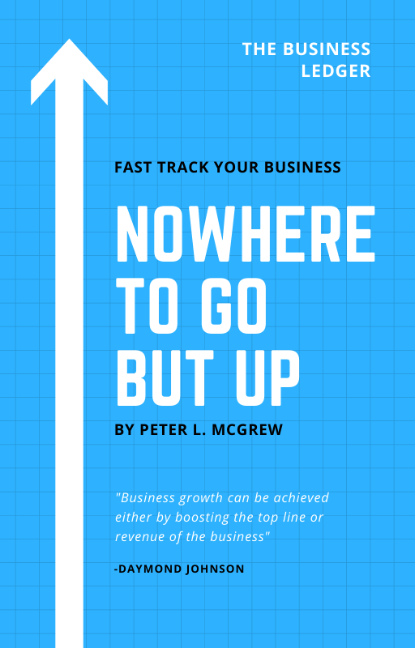
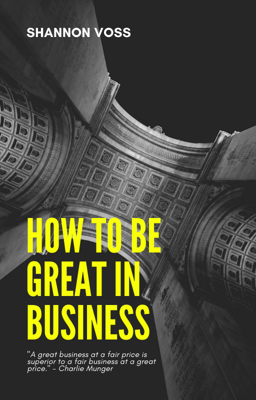

Starting your own business online is very easy and timely in this time of pandemic where everything that we do is conducted in an online platform. This kind of business also saves you a lot of money because you don’t have to worry about paying for the rent of your physical store, your employees and other expenses that a typical business does. Conducting business online lets you reach a wider audience and run your business 24/7 which gives you a high possibility of huge income and growth potential. Another good thing about this is the fact that you can handle your time and you can focus on the things that interest you the most. It’s not just that because online selling has a list of advantages to convince you to establish your own one. This type of business doesn’t limit you with your creativity and potential while you generate revenue at the same time

There are several things you need to consider before you start your own business online and one of them is to do your market research, to know who your target market is, and knowing them getting to know their preferences, their needs and their problems. In order to do this, you can check out for answers or ask your questions in online communities such as the social media, or blog sites online.
Next is to get to know your competitors, check out the effective strategies they do in their online selling platforms, not to copy them, but to create your own better version of it. It is also highly recommended that you create your own business plan out of all the information that you will be able to gather.
Once you are done with your research, you will eventually know what is the right product for you to sell, a product that will be profitable, in demand to your potential customers and without too many competitors. Determine your pricing and marketing strategy based on your market and product. Find reliable suppliers and wholesale distributors that sell high quality products at affordable costs so you can top up a reasonable price to your customers to earn a good amount of profit.
Since you are conducting your business online, choosing the right platform to build your store is your next step. There are different platforms to choose from such as e-commerce sites, third party shopping marketplaces, or you can also use the social media platforms. You should take note that having multiple channels generate a larger revenue as it gives you a higher chance of sale rather than having just one.
For you to get to know more about it, let’s talk about each one of them:
E-Commerce Websites allow you to sell your products directly to customers through means of data transfer and funds over the internet. Websites like this make it easy for you to set up your online store and make your customer shop online. Here, you have a full control over your online store. A lot of big companies use it but small businesses can also consider it although it has minimal fees that can cost as low as around 700 Philippine Peso per month. Some examples of this here in the Philippines are Shopify, Shopline, and OpenCart.
Choosing this platform to establish your online business is the easier and simpler way because they provide convenience for online sellers by having readily available payment platforms and delivery services affiliated to them. Some examples of this are Lazada, Shopee, OLX, or Sulit.PH
Social Media is one of the greatest ways to promote your business because a huge number of your target market might be here. Depending on your nature of business, choose the right social media platform for it. But no matter what it is, Facebook Business page is the most recommended as it is said that 83% of Filipinos use this social network.
Now the next step is to, choose the right mode-of-payment you will offer your customers by evaluating which is the safest and convenient way for you. Whether the bank account transfer method, the online payment method (through GCASH, PayMaya or PayPal), or the cash-on-delivery method. After this, is to choose which delivery methods would you go to. To do this, evaluate the different couriers options you have and pick the one that would satisfy you, as a business owner, and most especially your customers. Sending your products fast to your customers will make them love going back to buy in your store. Some of your delivery options are the different shipping companies which are the LBC, Air21, and 2GO Express, and the other option is through the delivery apps which are the Lalamove, GrabExpress, Mober, Transportify, and a lot more which is also in demand today as they offer a same-day delivery services for small businesses here in the Philippines.
When you are all set and ready to go. Do not forget to comply with legal formalities and paperworks before you launch your business. It is important to get your business registered just like the traditional businesses because the Philippines has the same regulations applied with online businesses regarding this matter. To have the permits and licenses to legally operate, you should go to the DTI office to register your business name, then to the local government, to get a mayor’s permit or municipal license from the city hall in your location and then to the BIR or Bureau of International Revenue, to have an issued business tax identification number and the authority to print official receipts and invoices to your customers.
You may think that establishing a business online has a lot of work to do, but once you get through it and eventually see your business grow, you will thank yourself for having the courage to start and realize that all of your effort, time, money and hard work is actually worth it.
Since there are a lot of online businesses that exist most especially in this generation, finding a unique way to sell your products is what will make you different from all of them. You can do this by keeping up with the latest trends and creating something out of it. Analyze what your competitors are doing and see the areas where they lack so you can use it as an opportunity to make your strategy unique.
Business trends are never stagnant. What’s in demand today might not be tomorrow. You just have to think about what's still working and what is not for your customers and have a back up plan to modify your products, and define your sales strategy to maintain your online business store and still satisfy your customers.
Good and high quality product images means a lot when building your own online store because it is the only way your customers can see your product. Always remember that bad product images usually give bad impressions from the customers.
Providing your customer a great customer service includes you being a responsive seller. By practicing responsive selling, you can engage more with your customers and gain a positive impression from them. This is an effective way to keep your customers and keep them coming back to your online store.
Customers would always choose a store where it is convenient for them. For you to do this, you can offer them a wide variety of payment and delivery options so that they can choose which one is best for them.
Customer reviews help your store and your products credibility and trust from the potential buyers. Customers usually check out the reviews to know the feedback about a certain product, it convinces them to buy your product or sometimes they get interested with it just by reading the reviews.
Paid ads give you a higher chance of promoting your business. If you have ever seen a “sponsored ads” while scrolling through your social media, it is because a certain business has considered getting paid ads for their page. Although this feature is paid, consider this as a good investment for your business as this does the promotion and marketing for you, it boosts your page, and makes people aware of your brand.
2021 * 10-minute read
Given the diverse nature of the Southeast Asian market, you really need to carefully figure out the initial steps to set up a successful online business.
Read More2020 * 5-minute read
It's perhaps one of the easiest to understand and get started with. Our ten-minute guide to the world of online selling will show you where to start, and how to do it right!
Read More2020 * 5-minute read
The key to the success of your online business is starting it right. Here’s a guide on how to start an online business in the Philippines.
Read MoreVideo Courtesy: Shopify Plus
https://www.youtube.com/watch?v=qxhj4ahR4Vg&t=51s
We create this content for general information purposes and all the information is base on our understanding and researches and it should not taken as advice. Always take professional advice.
Disclaimer: Note that we do not own the images and videos used in this website. All rights and credit goes directly to its rightful owners. This website is non-profit and made for educational purposes only. No copyright infringement intended.
"Copyright Disclaimer, Under Section 107 of the Copyright Act 1976, allowance is made for "fair use" for purposes such as criticism, comment, news reporting, teaching, scholarship, and research. Fair use is a use permitted by copyright statute that might
otherwise be infringing. Non-profit, educational or personal use tips the balance in favor of fair use"